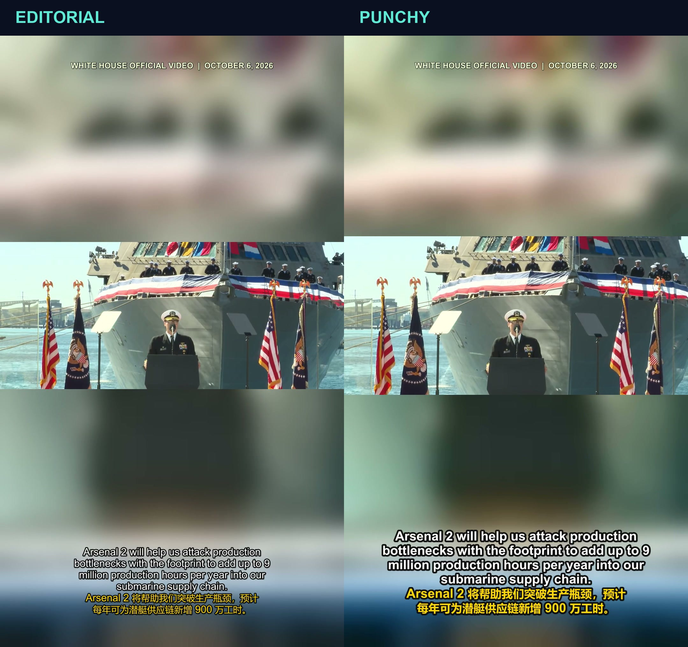

白宫视频 12:03 处，同一帧（短片第 5 秒）；画面、英文与中文字幕内容一致。

左：字幕较小、常规字重，整体更克制。右：字幕更大更粗、描边更明显，主体也略放大。
字幕原文：Arsenal 2 will help us attack production bottlenecks with the footprint to add up to 9 million production hours per year into our submarine supply chain.